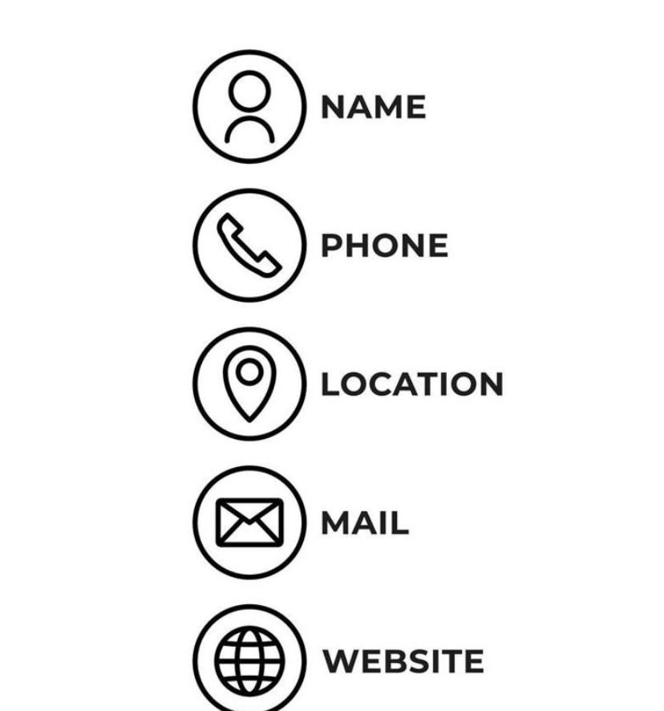

Get Involved

There are many ways to support Ubuntu Community Care Centre. You can volunteer your time, become a sponsor or support one of our community programmes.
Volunteer With Us
Volunteers play an important role in supporting our community activities and programmes. If you would like to volunteer, complete the enquiry form below and select the volunteer option.
Become a Sponsor
Sponsors can help Ubuntu Community Care Centre provide resources and continue supporting community programmes. Organisations and individuals interested in becoming sponsors are welcome to contact us.